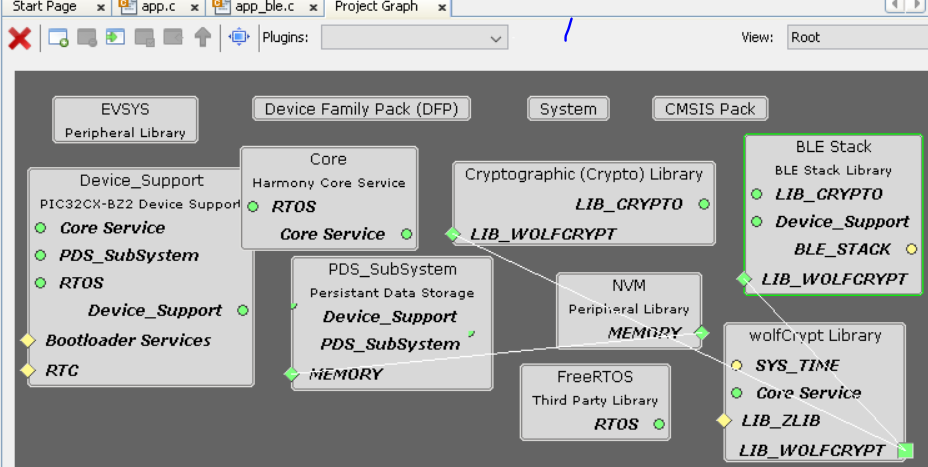

4.1.2.12 Path Loss Feature in Legacy Advertisements
Getting Started with Peripheral Building Blocks
BLE Sleep Mode Legacy Advertisements
Introduction
This document will help users to enable "Path Loss " feature with BLE Advertisements on WBZ451 Curiosity board using MPLAB Code Configurator(MCC)
The path loss is defined as the difference between the remote transmit power level and the average local RSSI measurement for the connection. In other words, Path loss refers to the attenuation or reduction in signal strength as it travels through the wireless channel from the transmitter (BLE device) to the receiver.
Path loss monitoring is a crucial feature in BLE, allowing for real-time assessment of signal strength and providing valuable insights for connection management.
Users of this document can choose to just run the precompiled Application Example hex file on the WBZ451 Curiosity Board and experience the demo or can go through the steps involved in developing this Application from scratch
These examples each build on top on one and other. We strongly recommend that you follow the examples in order, to learn the basics concepts before progressing to the more advanced topics.
Understanding Path Loss
Path Loss Zones
BLE path loss monitoring divides signal strength into specific zones to facilitate effective management. The core path loss zones are:
- Low Zone
- Middle Zone
- High Zone
The BLE Controller continuously evaluates path loss and notifies the Host when it transitions between these zones, based on predefined boundaries.
Calculating Path Loss
Path loss is determined as the difference between the remote transmit power level (the power at which the remote BLE device transmits) and the average local Received Signal Strength Indication (RSSI) measurement for the connection.
Zone Transition Criteria
Path loss is considered to have entered a new zone under specific conditions:
Transition to a Higher Zone: Path loss becomes greater than or equal to the upwards boundary when moving to a higher zone.
Transition to a Lower Zone: Path loss becomes less than or equal to the downwards boundary when moving to a lower zone.
To prevent frequent zone switching, some hysteresis is provided. The upwards boundary should be greater than or equal to the downwards boundary, ensuring a smooth transition.
Correlation with Distance
Path loss often correlates with the distance between BLE devices. A higher zone may indicate that the peer BLE device has moved farther away. This information can be invaluable for various applications, such as proximity detection and device localization.
Path Loss Measurement
Path loss monitoring relies on obtaining data about both the remote transmit power level and local RSSI measurements. Two procedures are commonly used for this purpose:
1. Power Control Request Procedure
The Power Control Request procedure involves periodically requesting the remote BLE device to provide its transmit power level. Combining this information with local RSSI measurements enables the calculation of path loss.
2. Power Change Indication Procedure
The Power Change Indication procedure informs the Controller when the remote BLE device changes its transmit power level. This can occur due to adaptive power management or other factors. Upon receiving a power change indication, the Controller updates its path loss calculations accordingly.
Power Control Request procedure in context of path loss monitoring
The Power Control Request procedure is a critical component of path loss monitoring in Bluetooth Low Energy (BLE). This procedure enables the measurement of the remote transmit power level, which is essential for calculating path loss accurately.

Practical Applications
Path loss monitoring in BLE finds applications in various scenarios:
Proximity Detection: Path loss data can be used to estimate the distance between BLE devices accurately. This is especially useful for applications such as asset tracking, location-based services, and contact tracing.
Adaptive Power Management: Knowledge of path loss allows the Controller to dynamically adjust the transmit power level. This optimization helps conserve energy while maintaining a stable connection.
Connection Maintenance: Path loss notifications serve as early warnings of degrading connections due to increasing path loss. This can trigger actions like reconfiguration or re-establishment of the connection to maintain service quality.
Interference Mitigation: In environments with substantial interference, path loss monitoring helps identify deteriorating signal quality. This early detection enables the implementation of countermeasures, such as channel hopping or adjusting transmission parameters.
Recommended Reads
Hardware Required
| Tool | Qty |
|---|---|
| WBZ451 Curiosity Board | 2 |
| Micro USB cable | 2 |
SDK Setup
Software
Programming the precompiled hex file or Application Example
Programming the hex file using MPLABX IPE
Precompiled Hex file is located in "<Harmony Content Path>\wireless_apps_pic32cxbz2_wbz45\apps\ble\building_blocks\peripheral\Legacy_ADV_Pathloss\dist\default\production\" folder
Follow the steps mentioned here
Caution: Users should choose the correct Device and Tool information
Programming the Application using MPLABX IDE
Follow steps mentioned in of Running a Precompiled Example document
Open and program the Application Example "Legacy_ADV_Pathloss.X.production.x" located in "<Harmony Content Path>\wireless_apps_pic32cxbz2_wbz45\apps\ble\building_blocks\peripheral\Legacy_ADV_Pathloss\firmware" using MPLABX IDE
<Harmony Content Path> how to find what is my Harmony Content Path
Demo Description
This application example implements the path loss feature into an peripheral legacy advertisement application. The testing of this application is done by connecting the path loss feature included peripheral legacy application to an Central connection application. After successfully connection, at the peripheral application serial console, the path loss and zone will be updated frequently.
Testing
1) Connect the first WBZ451 Curiosity board to PC, program the central connection application. The central connection application once booted will start scanning and upon finding the device with BT Address A6A5A4A3A2A1 will initiate a connection.
2) Connect the second WBZ451 Curiosity board to PC, program the path loss peripheral legacy advertisement application . Open Dockligth Scripting @ (Speed: 115200, Data: 8-bit, Parity: none, stop bits: 1 bit, Flow control: none). Reset the board. Upon reset, "Advertising" message is displayed on the TeraTerm.
Developing this Application from scratch using MPLAB Code Configurator
Note: The path loss feature can be incorporated to any of the peripheral or central application. Here, the path loss featuer is showcased by implementing it in Peripheral advertisement application as a referrence. And the path loss feature implemented in the peripheral legacy advertisement is then tested by connecting it with Central connection application.
This section explains the steps required by a user to develop this application example from scratch using MPLABx Code Configurator
Tip: New users of MPLAB Code Configurator are recommended to go through the overview.
Create a new MCC Harmony Project -- link for instructions
Import component configuration --This step helps users setup the basic components and configuration required to develop this application. The imported file is of format .mc3 and is located in the path "<Harmony Content Path>\wireless_apps_pic32cxbz2_wbz45\apps\ble\building_blocks\peripheral\legacy_ADV_Pathloss\firmware\legacy_ADV_Pathloss.X". Users should follow the instructions mentioned here to import the component configuration.
Accept Dependencies or satisfiers, select "Yes"
- Verify if the Project Graph window has all the expected configuration
- Generate the code.
Files and Routines Automatically generated by the MCC
After generating the program source from MCC interface by clicking Generate Code, the BLE configuration can be found in the following project directories

The OSAL, RF System, BLE System initialization routine executed during program initialization can be found in the project files. This initialization routine is automatically generated by the MCC

The BLE stack initialization routine excuted during Application Initialization can be found in project files. This intitialization routine is automatically generated by the MCC. This call initializes and configures the GAP, GATT, SMP, L2CAP and BLE middleware layers.
Autogenerated, adverisement Data Format

| Source Files | Usage |
|---|---|
| app.c | Application State machine, includes calls for Initialization of all BLE stack (GAP,GATT, SMP, L2CAP) related component configurations |
| app_ble.c | Source Code for the BLE stack related component configurations, code related to function calls from app.c |
| app_ble_handler.c | All GAP, GATT, SMP and L2CAP Event handlers |
Tip: app.c is autogenerated and has a state machine based Application code sample, users can use this template to develop their application |
Header Files
ble_gap.h- This header file contains BLE GAP functions and is automatically included in the app.c file
Function Calls
MCC generates and adds the code to initialize the BLE Stack GAP, GATT, L2CAP and SMP in APP_BleStackInit() function
APP_BleStackInit() is the API that will be called inside the Applications Initial State -- APP_STATE_INIT in app.c
User Application Development
Include
-
user action is required as mentioned here
-
definitions.h in all the files where UART will be used to print debug information
Tip: definitions.h is not specific to just UART peripheral, instead it should be included in all application source files where peripheral functionality will be exercised
Set PUBLIC Device Address
-
BLE_GAP_SetDeviceAddr(&devAddr);
This API can be called in APP_BleConfig() located in file app_ble.c
BLE_GAP_Addr_T devAddr;
devAddr.addrType = BLE_GAP_ADDR_TYPE_PUBLIC;
devAddr.addr[0] = 0xA1;
devAddr.addr[1] = 0xA2;
devAddr.addr[2] = 0xA3;
devAddr.addr[3] = 0xA4;
devAddr.addr[4] = 0xA5;
devAddr.addr[5] = 0xA6;
// Configure device address
BLE_GAP_SetDeviceAddr(&devAddr);Start Advertisement
-
BLE_GAP_SetAdvEnable(0x01, 0);
This API is called in the Applications initialstate - APP_STATE_INIT in app.c
Users can exercise various other BLE Advertisement functionalities by using BLE Stack API
Path Loss configuration
Inside the connection handle, set the threshold, hysteresis and min Time spent configurations
In the Path loss event handler add the below code to collect the path loss and current zone entered. Which will be then printed to the console
The golden range in BLE typically refers to the range where the signal strength is strong enough for reliable communication. The golden range is set as 50~ -70 dBm.